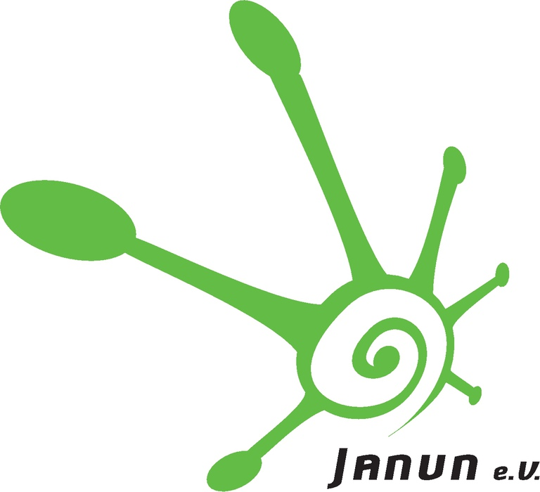
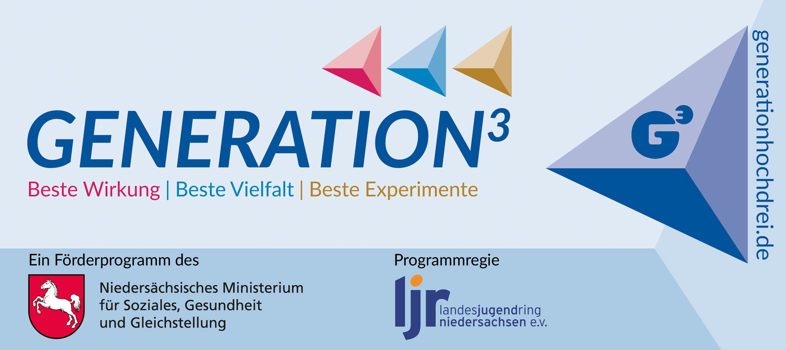
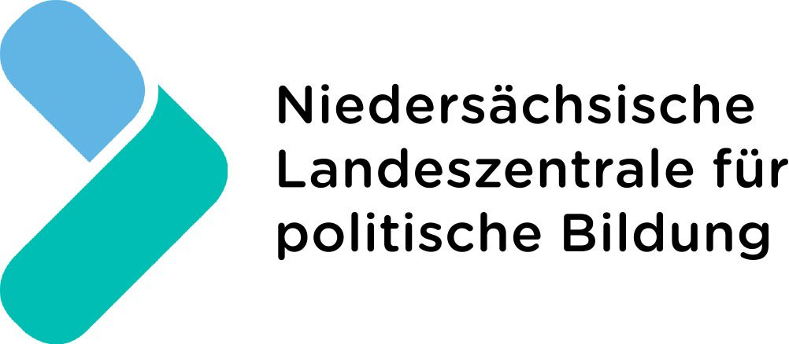
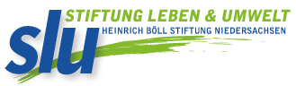
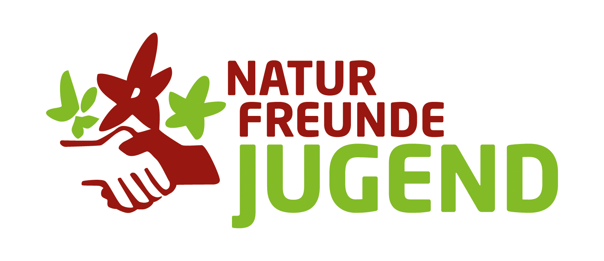

Der Begriff „queer“ (gesprochen: kwier) kommt aus dem Englischen und bedeutet ursprünglich seltsam, komisch, wundersam. „Queer“ wurde und wird in englischsprachigen Ländern als Schimpfwort für Menschen genutzt, die nicht heterosexuell sind, ihr soziales Geschlecht (gender) nicht mit ihrem ‚natürlichen‘/biologischen Geschlecht (sex) identifizieren oder sich einer zweigeschlechtlichen Logik entziehen. Klingt kompliziert? Dann nur, weil die feste und tiefsitzende Grundannahme unserer Gesellschaft ist, dass es zwei ‚natürliche‘ Geschlechter gibt, nämlich Mann und Frau, dass Frauen eine Vulva und Männer einen Penis haben und Frauen Männer lieben und Männer Frauen. Die Realität ist allerdings sehr viel bunter und vielfältiger und lässt sich nicht so einfach nach dieser heteronormativen (Hä, was ist denn das? Hier erfährst du mehr.) Logik ordnen. Heutzutage wird „queer“ oft als positive Selbstbezeichnung und Sammelbegriff für verschiedene sexuelle Orientierungen und geschlechtliche Identitäten verwendet. Das Buchstabenkürzel LSBTIQ ist ein Sammelbegriff für die Vielfalt und Unterschiedlichkeit queerer Identitäten und Orientierungen. Erfahre hier, was genau damit gemeint ist.
Die Abkürzung LSBTIQ steht für:
Frauen, die Frauen lieben.
Männer, die Männer lieben.
Menschen, die sowohl Männer, als auch Frauen lieben. Es wird auch vermehrt die Selbstbezeichnung pansexuell benutzt. Das bedeutet, dass die sexuelle Orientierung gar nicht vom Geschlecht des Gegenübers abhängig ist. Pansexuelle sagen dann zum Beispiel: „Ich liebe die Person, es ist nicht wichtig, ob Mann oder Frau oder whatever.“. Ha, cool!
Transgeschlechtlichtkeit benennt den Umstand, dass sich nicht alle Menschen mit dem Geschlecht wohl fühlen, dass ihnen bei der Geburt zugewiesen wurde. Das heißt, „sie fühlen sich dauerhaft nicht dem Geschlecht zugehörig, das ihnen aufgrund ihres Körpers und seiner Merkmale zugeschrieben wird, sondern »dem anderen« der beiden Geschlechtskategorien »männlich« und »weiblich«“. (Landesjugendring Niedersachsen e.V. (2018): Praxisbuch queere Vielfalt in der Jugendarbeit, S.11 PDF) Aber auch Menschen, sie sich geschlechtlich nicht verorten, sind trans. Das Sternchen in der Bezeichnung soll Raum für verschiedene Identitäten lassen, wie beispielsweise transsexuell, Transmann, Transfrau, transident, Transgender,… (siehe hier)
„Menschen, deren körperliches Geschlecht medizinisch nicht eindeutig zugeordnet werden kann, werden oft als »intersexuell« oder »intergeschlechtlich« bezeichnet. Das bedeutet wörtlich so viel, wie »zwischen den Geschlechtern« – gemeint sind hier die normativen Geschlechter »Mann« und »Frau«.“ (Niedersachsen e.V. (2018): Praxisbuch queere Vielfalt in der Jugendarbeit, S.11) Lange wurden Kinder mit uneindeutigen Geschlechtsmerkmalen in Säuglings- oder Kleinkindalter ohne ihre Zustimmung operiert, sodass sie eindeutig »männlich« oder »weiblich« einzuordnen waren. Das hat häufig körperliche und seelische Leiden zur Folge, spätestens mit Beginn der Pubertät. Mittlerweile gilt die Empfehlung, dass keine medizinischen Eingriffe ohne Einwilligung der betroffenen Person durchgeführt werden dürfen. Außerdem wurde beschlossen, dass neben dem Geschlechtseintrag »männlich« und »weiblich« nun auch die Möglichkeit »divers« eingeführt wird. Juhu!
Queer ist ein sehr deutungsoffener und nicht festgelegter Begriff. Manchmal wird er sehr generell übergeordnet für lesbisch, schwul, trans*, inter, asexuell, … verwendet. Vereinfacht könnte man sagen, queer ist, wer nicht heterosexuell und/oder cisgeschlechtlich (was damit gemeint ist, erfährst du hier) ist. In der Aufzählung LSBT*IQ dient er als Platzhalter und Sichtbarmachung für Menschen, die sich Zweigeschlechtlichkeit und Heteronormativität entziehen. Also zum Beispiel umfasst das Q genderfluid, abinär, genderquestioning, genderbending. Queer ist also kein eindeutiges Label,wie zum Beispiel schwul. Und das ist gut so, schließlich sind geschlechtliche Identität, Gender und sexuelles Begehren ein weites, sehr individuelles Spektrum.
In der gängigen Aufzählung wird meist asexuell nicht genannt. Aber, auch das ist eine Tatsache: Menschen, die sich nicht zu anderen sexuell hingezogen fühlen oder ein sehr niedriges bis gar kein sexuelles Begehren verspüren. Das heißt zwar nicht, dass asexuelle Menschen keine Beziehungen führen oder sich verlieben, kann manchmal aber ganz schön belastend sein, weil die Grundannahme in unserer Gesellschaft ist, dass alle Menschen Sex haben und wollen. Und zwar – so die Norm – in einer schön einfachen zweigeschlechtlichen/binären Ordnung: Männer lieben Frauen. Frauen lieben Männer. Punkt. Gähn! Gleich drei Dinge daran sind viel zu restriktiv, eng und schlicht am Leben vorbei gedacht: es ist heteronormativ (Hä, was ist denn das? Hier erfährst du mehr!), es gibt mehr geschlechtliche Identitäten als Mann und Frau und es gibt mehr Formen sexueller Orientierungen als Heterosexualität.
Wenn das von außen zugewiesene Geschlecht mit dem Geschlecht übereinstimmt, mit dem auch die betreffende Person sich selbst dauerhaft identifiziert und wohlfühlt, ist sie cisgeschlechtlich. Wird also beispielsweise bei einem neugeborenen Kind aufgrund des sichtbaren Genitals (Vulva) das weibliche Geschlecht festgestellt und fühlt sich der Mensch Zeit seines Lebens wohl in der weiblichen Geschlechterrolle, ist das ein Beispiel für Cisgeschlechtlichkeit. Die unhinterfragt geltende Grundannahme unserer Gesellschaft ist: du hast eine Vulva, dann bist du ein Mädchen. Du hast einen Penis, dann bist du ein Junge. Aber: so einfach und so selbstverständlich ist das nicht. (Landesjugendring Niedersachsen e.V. (2018): Praxisbuch queere Vielfalt in der Jugendarbeit, S.11).
„Im gesellschaftlichen Alltagsdenken ist das Geschlecht jeder Person ‚natürlich gegeben‘ und entweder als weiblich oder als männlich bestimmbar. Einem neugeborenen Menschen wird deswegen bei oder bereits vor der Geburt (meist gemäß den sichtbaren Genitalien) ein Geschlecht zugewiesen. Der gesellschaftlichen Norm zufolge hat dieser Mensch sich dann auch mit seiner geschlechtlichen Identität entweder als weiblich oder männlich abzufinden.“ (Landesjugendring Niedersachsen e.V. (2018): Praxisbuch queere Vielfalt in der Jugendarbeit, S.10) Die sexuelle Orientierung wird dann gemäß einer heterosexuellen Logik vom ‚natürlichen‘ Geschlecht abgeleitet: also Jungs verlieben sich in Mädchen und Mädchen verlieben sich in Jungs. Du kannst allerdings ein Junge sein und dich in Jungs verlieben. Du kannst ein Transmädchen sein und dich in Jungs verlieben. Du kannst ein Mädchen sein und dich sowohl in Jungs als auch in Mädchen verlieben – um nur ein paar Möglichkeiten zu nennen. Liebe ist für alle da!
Bist du als Mädchen sozialisiert und aufgewachsen, wirst du irgendwann mit Sicherheit gefragt, ob du einen Freund hast. Umgekehrt gilt das gleiche. Das wird u.a. mit dem Begriff „Heteronormativität“ bezeichnet – die Grundannahme, alle Menschen seien heterosexuell und lassen sich den binären Geschlechtern Mann und Frau zuordnen. Entsprechend dieser Grundannahme ist unsere Gesellschaft organisiert: die meisten Filme und Bücher handeln von heterosexuellen Liebesgeschichten, Toiletten sind für Frauen und Männer ausgeschildert und so weiter. Diejenigen, die dieser Norm nicht entsprechen, werden als ‚anders‘ oder nicht ‚normal‘ wahrgenommen. Das hat zur Folge, dass zum Beispiel Homosexualität in Deutschland lange als Krankheit galt und sogar mit Gefängnisstrafen geahndet wurde. Glücklicherweise hat sich das geändert. Aber auch im geltenden Transsexuellengesetz, kurz TSG (das 1980 verabschiedet wurde und somit wirklich sehr eingestaubt ist), werden transidente Menschen als Menschen mit psychische Störung pathologisiert. Dagegen formiert sich selbstverständlich Kritik und Widerstand und auch die Antidiskriminierungsstelle des Bundes stuft das TSG als verfassungswidrig ein.
In Filmen und Serien sind immer mehr Menschen zu sehen, die nicht cis und hetero sind. Das ist wirklich toll, da Repräsentationen und Vorbilder für die eigene Identitätsfindung wichtig sind. Auch in der (geschriebenen) Sprache findet einer Veränderung statt: häufig liest man nun Schüler*innen (oder SchülerInnen, Schüler_innen) oder Studierenden satt Studenten. Manchmal entsteht so aber auch der Eindruck, als hätte es ‚das alles‘ früher nicht gegeben. Gerade rechtspopulistische Argumentationen funktionieren oft so, dass sie von einem ‚Genderwahn‘ sprechen und davor warnen, dass die Menschheit, wenn es so weitergeht, homosexuell und folglich aussterben wird. Darüber kann man nur den Kopf schütteln und fröhlich zur nächsten Pride-Demo spazieren. Trotzdem sei hier kurz gesagt, dass „queer“ als Wort vielleicht recht neu/modern ist, es aber schon immer queere Menschen gegeben hat. So gibt es Schriften von der griechischen Dichterin Sappho, die etwa 600 Jahre vor der christlichen Zeitrechnung gelebt hat, in denen sie über lesbische Liebe schreibt. Queere Identitäten und Begehren sind also uralt, sie sind nur meist weniger sichtbar, weil sie nicht der heteronormativen Norm, die ebenfalls schon sehr lange am Wirken ist, entsprechen.
Vielleicht stellen sich dir Fragen wie: „Wieso finde ich Jungen viel spannender und interessanter als Mädchen, obwohl ich selbst ein Junge bin? Kann es sein, dass ich mich sowohl zu Mädchen als auch zu Jungen hingezogen fühle? Wieso fühle ich mich selbst nicht wohl damit, mich als ‚ein Mädchen‘ zu identifizieren, obwohl ich bislang als Mädchen groß geworden bin? Ich fühle mich manchmal als Mädchen, manchmal als Junge – und manchmal gar keinem Geschlecht zugehörig. Ist das in Ordnung? Wie erzähle ich anderen davon?“ (Landesjugendring Niedersachsen e.V. (2018): Praxisbuch queere Vielfalt in der Jugendarbeit, S.16.) Dann sind das alles erst mal Fragen, die du mit dir selbst ausmachst. Mal länger, mal weniger lang. Mal früher, mal erst im Erwachsenenalter. Das sind wirklich keine einfachen Fragen, weil um dich herum alles nach heterosexuellen Prinzipien organisiert ist. Aber du bist du und im Prozess des inneren Coming-Outs wirst du dir bewusst, queer zu sein. An dieses inneren Prozess schließt sich dann meistens, aber auch nicht zwangsläufig, das äußere Coming-Out, „Going Public“ oder Outing an. Wahrscheinlich erfahren Eltern, Freund*innen und andere wichtige Bezugspersonen davon. Das äußere Coming-Out erfolgt also nicht nur einmal, sondern in unterschiedlichen Bezugsgruppen und Kontexten immer wieder neu. (Landesjugendring Niedersachsen e.V. (2018): Praxisbuch queere Vielfalt in der Jugendarbeit, S.17) Wenn du Angst vorm Outing hast oder erst mal mit anderen Queers reden möchtest, schau gerne bei den hier angeführten Anlauf- und Beratungsstellen oder deren Homepages vorbei.
In vielen Städten gibt es regelmäßige Treffen von queeren Gruppen oder auch Anlaufstellen/queere Zentren, in denen Angebote, Informationen, Aufklärung und Beratung angeboten werden. Wenn Du nach solchen Orten suchst, ist oft mit wenigen Klicks übers Internet herauszufinden, wo Du in Deiner Nähe eine queere Gruppe/Stammtisch/Zentrum findest. Wir haben außerdem hier auf der Website einige queere Orte und Anlaufstellen in Niedersachsen zusammen getragen.